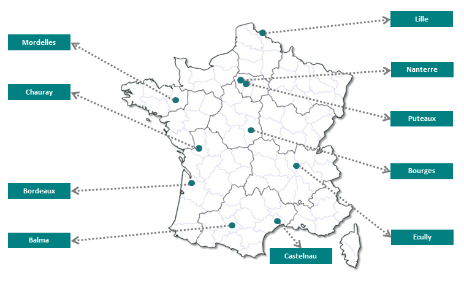
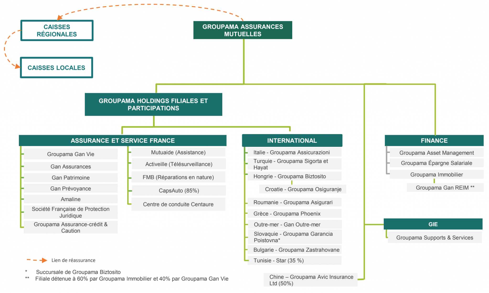

Présentation de l’entreprise et son service d’accueil
Présentation
Mon alternance a débuté le 2 septembre 2024 chez Groupama Supports Services, GIE (Groupement d’Intérêt Économique) interne au service du groupe GROUPAMA SA.
Groupama est un groupe d'assurance existant depuis plus de 100 ans. Son modèle est basé sur une gestion collaborative et des valeurs d’entraide et de proximité. Ces valeurs se reflètent dans la raison d’être du groupe, qui est la suivante :
"Nous sommes là pour permettre au plus grand nombre de construire leur vie en confiance. Pour cela, nous sommes fondés sur des communautés d’entraide humaines, proches et responsables. »
Le groupe compte 31 000 employés, dont 6 000 à l'étranger, et protège 12 millions de clients et sociétaires en France, ainsi que 5,5 millions de clients à l'étranger. En France, il est le 6ᵉ assureur généraliste avec un chiffre d’affaires annuel de 15,9 milliards d’euros, tandis que l’étranger représente 16 % de ce chiffre.
Groupama SA regroupe plusieurs entités :
- Les caisses locales et régionales :
- Caisses locales : Environ 2 400 caisses locales réparties partout en France. Elles servent de relais de proximité pour les sociétaires.
- Caisses régionales : Le groupe compte 9 caisses métropolitaines, 2 caisses d’outre-mer (Antilles et Guyane) et 2 caisses spécialisées (Groupama Forêts Assurances et Producteurs de tabac). Vous trouverez le détail de chacun des sites sur l'image ci-dessous :
- Groupama Assurances Mutuelles (GMA) : Cette entité assure le pilotage des activités et joue un rôle d’organisation professionnelle agricole.
- Filiales du groupe :
- Filiales d'assurance :
- Gan : Inclut Gan Eurocourtage, Gan Assurances, Gan Patrimoine et Gan Prévoyance.
- Amaline Assurances : Spécialisée dans l'assurance en ligne.
- Filiales de services :
- Groupama Protection Juridique : Offre des services de protection juridique.
- Groupama Assurance-Crédit & Caution : Spécialisée dans l'assurance-crédit et les cautions.
- CapsAuto : Fournit des services liés à l'automobile.
- Mutuaide : Propose des services d'assistance.
- Activeille : Spécialisée dans la télésurveillance.
- Filiales financières :
- Groupama Asset Management : Gestion d'actifs.
- Groupama Épargne Salariale : Gestion de l'épargne salariale.
- Groupama Immobilier : Gestion du patrimoine immobilier.
- Filiales internationales : Présence dans neuf pays, notamment en Italie, Hongrie, Roumanie, Grèce, Bulgarie et Chine.
- Filiales d'assurance :

L’entreprise regroupe deux marques distinctes : Groupama et Gan.
Mon alternance se déroule au sein de la filière GMA du groupe Groupama, et plus précisément dans l'entité Groupama Supports & Services. La figure ci-dessous résume sous forme de schéma l’ensemble de ces entités.

Organisation de Groupama Supports et Services (G2S)
Groupama Supports et Services (G2S), piloté par Philippe BELLORINI, est un GIE informatique visant à répondre aux besoins des entités du groupe et à améliorer leur performance. G2S prend également en charge certains moyens généraux, tels que la gestion des immeubles via la direction DEXI.
Implantée sur plusieurs sites en France, G2S assure une présence au quotidien pour ses équipes. Mon alternance se déroule sur le site d'Écully, où je suis présent 4 jours par semaine, avec 1 jour de télétravail. Cette organisation, bien structurée, n'a pas été déstabilisante, d’autant plus que les réunions de suivi, comme les comités de projet et les daily meetings, sont bien organisées.
Mission de la Direction des Systèmes d’Information (DSI) de G2S
La Direction des Systèmes d'Information (DSI) de G2S est responsable de :
- Assurer la mise à disposition quotidienne des données et traitements nécessaires aux activités des 25 000 utilisateurs du groupe.
- Garantir la sécurité, l'intégrité et la pérennité des actifs informatiques du groupe.
- Concevoir et déployer de nouveaux systèmes d'information et infrastructures techniques adaptées aux besoins du groupe.
- Assurer le maintien opérationnel et l’évolution des systèmes existants.
- Accompagner le développement commercial du groupe, au niveau national et international.
G2S emploie environ 1 500 collaborateurs et dispose d’un budget annuel de 450 millions d'euros, dont les trois quarts sont dédiés aux technologies de l'information (IT).
Structure interne de la DMCD et du projet GDE
La Direction des projets Marketing et Canaux Digitaux (DMCD) regroupe plusieurs entités, dont la GAN Digital Factory. Cette équipe est dédiée à la transformation numérique et aux projets digitaux au sein du groupe.
Le service se concentre sur le développement de solutions innovantes pour améliorer les canaux de communication et les services digitaux, notamment à travers le projet GDE (Gestion des Échanges).
Principaux responsables et rôles dans l’organisation
Le projet GDE, dans lequel je travaille, est dirigé par Paul PERROTMINOT, chef de projet. L'équipe est également accompagnée par :
- Lionel RIMBERT, Scrum Master
- Yurifer SANCHEZ, Lead Dev
La hiérarchie de l'organisation est structurée comme suit :
- Groupama - Thierry Martel : Responsable général du groupe, supervisant l'ensemble des entités.
- G2S (Groupama Supports et Services) - Philippe Bellorini : Responsable du GIE informatique, en charge de la performance et du soutien aux entités du groupe.
- DMCD (Direction des projets Marketing et Canaux Digitaux) - Mickaël Vinuales : Responsable du service chargé des projets marketing et de la transformation digitale.
- GAN Digital Factory - Henri Giordano : Responsable de l'équipe en charge de la transformation numérique et des projets digitaux, en particulier le projet GDE.